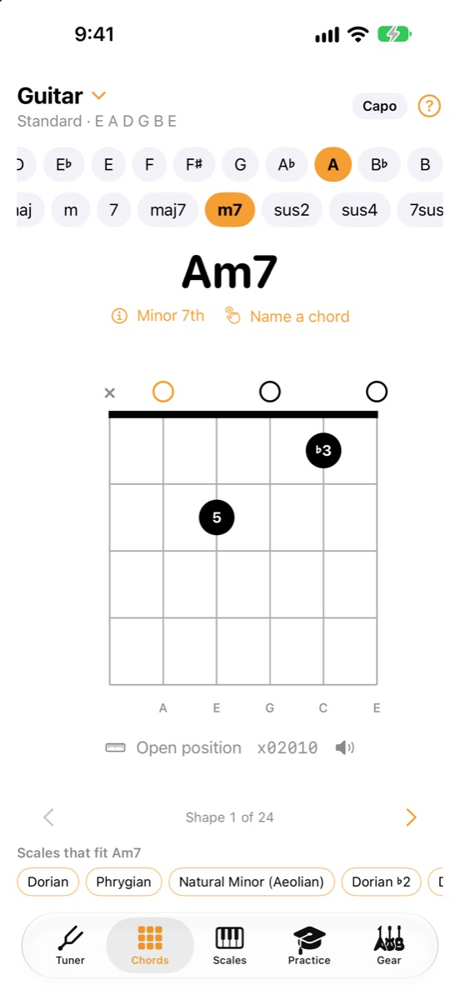
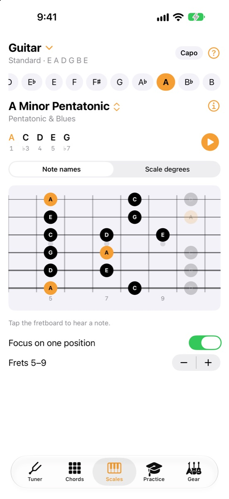
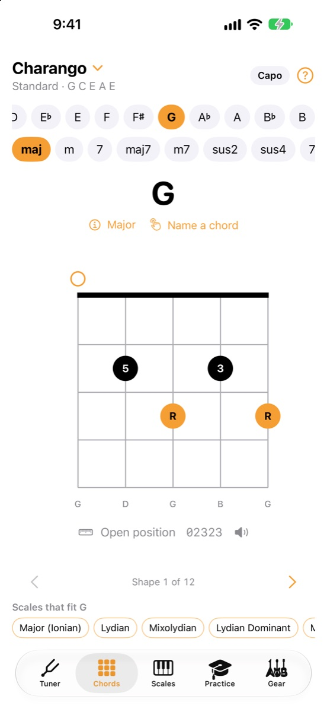
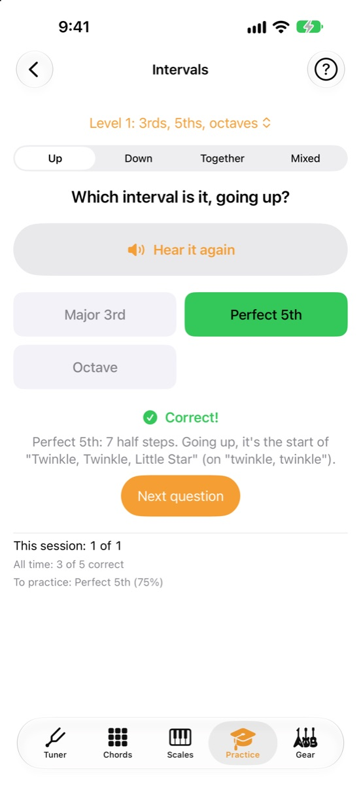
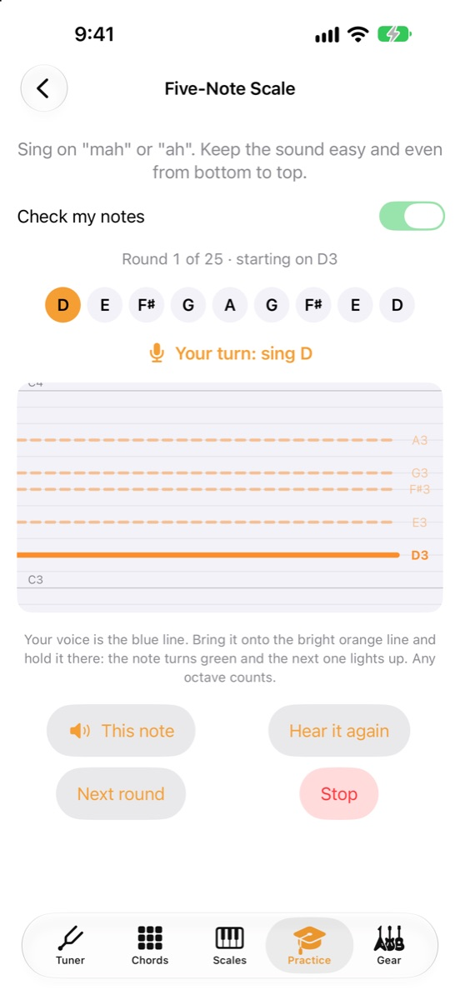

Everything a string player practices with
Built for players of every level, with a step-by-step guide on every screen and musical terms explained in plain language.

Every way to play every chord
17 chord types in every key, with all the practical shapes for any tuning, easiest first. Tap a shape to hear it.

60+ scales, with their stories
Modes, pentatonics, blues and scales from Spain to Japan, each with what it sounds like, where it comes from and where you'll hear it.

The instruments other apps forget
Paired strings, octave pairs and re-entrant tunings handled properly, so charango, cuatro and tiple chords come out right.

Train your ear
Name intervals, chord types, scales and notes in a key, from beginner to advanced, with a tip after every answer.

Warm up your voice
Find your range, then sing guided warmups that listen as you sing and climb through your voice a half step at a time.
And the little things
Capo support, left-handed mode, a dim red Stage mode for dark rooms, string-change reminders, and Do-Re-Mi note names.
31 instruments, tuned and charted
Each with its standard tuning and common alternates. Don't see yours? Build it in the app.
- Guitar
- 7-string guitar
- 12-string guitar
- Baritone guitar
- Tenor guitar
- Requinto
- Bass
- 5-string bass
- Ukulele
- Baritone ukulele
- Mandolin
- Mandola
- Octave mandolin
- Banjo
- Tenor banjo
- Charango
- Ronroco
- Venezuelan cuatro
- Puerto Rican cuatro
- Cuban tres
- Colombian tiple
- Bandola llanera
- Cavaquinho
- Viola caipira
- Irish bouzouki
- Greek bouzouki
- Balalaika
- Violin
- Viola
- Cello